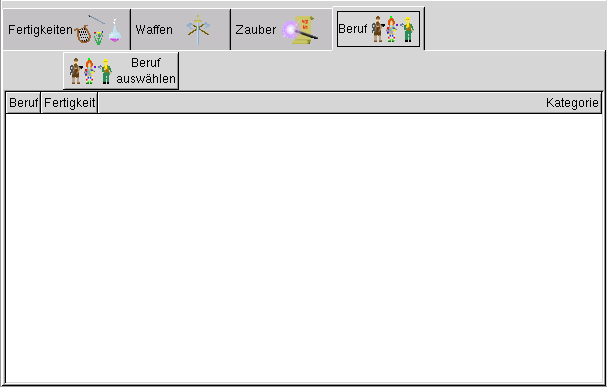
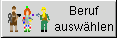

rechte Maustaste:
Der Beruf kann in das Eingabefeld direkt eingegeben werden. Es wird weder ein Wert noch eine Fertigkeit mir dem Beruf verbunden.

Innerhalb diesen Fensters wird dem Abenteurer ein Beruf verschafft.
Beruf auswählen:

Es gibt zwei Wege, auf die ein Abenteurer durch betätigen des Buttons einen Beruf erhalten kann:

rechte Maustaste:
Der Beruf kann in das Eingabefeld direkt eingegeben werden. Es wird weder ein Wert
noch eine Fertigkeit mir dem Beruf verbunden.

linke Maustaste:
Das Fenster zur Berufswahl wird geöffnet, gleichzeitig wird für den Beruf gewürfelt. Die Berufe stehen abhängig
vom Würfelergebnis zur Auswahl.
Um das Würfelergebnis zu verändern steht der Button 'Würfeln' zur Verfügung.

Auch hier bestehen zwei Möglichkeiten, den Butten zu bedienen:
linke Maustaste:
Der Würfelwurf wird wiederholt.
rechte Maustaste:
Der gewünschte Wert kann direkt eingegeben werden.

Die eigentliche Auswahl des Berufes erfolgt durch die Auswahl einer mit dem Beruf verbunden Fertigkeit.